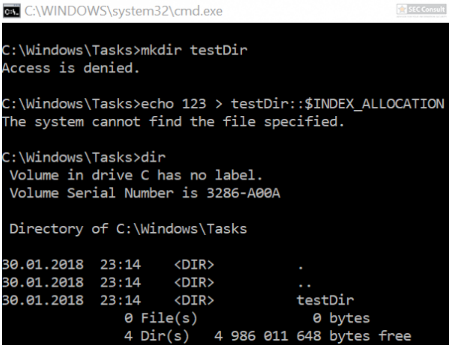

On Windows you can assign “special permissions” to folders like permissions that a user is allowed to create files in a folder, but is not allowed to create folders.
One example of such a folder is C:\Windows\Tasks\ where users can create files, but are not allowed to create folders.
Moreover, it’s possible that an administrator or a program configures such permissions and assumes that users are really not allowed to create folders in it.
This ACL can be bypassed as soon as a user can create files. Adding “::$INDEX_ALLOCATION” to the end of a filename will create a folder instead of a file and Windows currently doesn’t include a check for this corner case.

As shown above, a directory was successfully created and the user can create arbitrary files or folders in this directory (which can lead to privilege escalation if an administrator/program assumes that this is not possible because of the missing permissions).
Side note: The ::$INDEX_ALLOCATION trick can also be used to delete directories if an application just allows to delete files.
Patched 12 June 2018.